Applications of Hollow Core Fibers to Ultrafast Laser Pulses
LCLS Engineering Seminar Series
Matt Bain | April 7, 2026
The Science Case — Ultrafast Processes
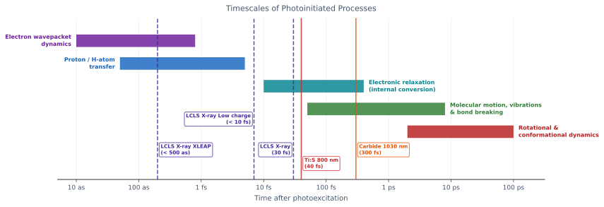
Photoinitiated dynamics span attoseconds (electron motion) to picoseconds (nuclear rearrangement) — each decade requires a shorter probe
LCLS X-ray pulses (~10–20 fs) probe structure; the optical pump must match this timescale to achieve meaningful time resolution
Compressing to <50 fs unlocks electronic relaxation and proton-transfer dynamics inaccessible to standard ~150 fs amplifier pulses
Electron wavepacket dynamics and core-hole decay occur on attosecond timescales — beyond the reach of even compressed fs pulses, but set the context for why we push toward shorter pulses.
Proton transfer (e.g. in photoacids, DNA bases) occurs on a 1–20 fs timescale — accessible with 10 fs pulses but not with 100 fs pulses.
Electronic relaxation (S2→S1 internal conversion) in organic chromophores is typically 10–500 fs — the prime target for ultrafast spectroscopy at LCLS.
Molecular vibrations and IVR span 100 fs to a few ps; nuclear structural changes (bond breaking, isomerisation) from a few hundred fs to 10 ps.
.The grey bands marks the typical amplifier/ OPA output associated with the two dominant ultrafast laser technologies — it misses proton transfer and fast electronic dynamics entirely.
Motivation — Why Ultrafast Pulses at LCLS?
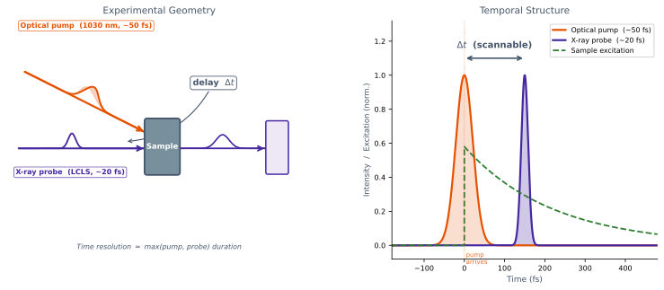
The Goal
Pulse duration short enough to resolve ultrafast dynamics — target <20 fs
Sufficient pulse energy to drive nonlinear excitation in experiments
Compatible with LCLS-II repetition rates (up to MHz)
LCLS operates pump–probe experiments where an optical laser excites a sample and X-rays probe the structural response. Temporal resolution is limited by whichever pulse is longer — so optical pulses must be as short as the X-ray pulses (~10–20 fs).
The key engineering challenge: getting from ~150 fs (typical Yb amplifier output) down to <20 fs without destroying the optics or beam quality.
Hollow core fibres solve the damage threshold problem by keeping the light in gas rather than glass — and gas pressure tunes the dispersion to enable soliton self-compression.
What is an Ultrafast Laser Pulse?
Each frequency component oscillates at its own rate. At $t = 0$ all components are in phase and add constructively.
Away from $t = 0$ they rapidly dephase and cancel — the more components (broader bandwidth), the faster the cancellation, and the shorter the pulse: $\Delta t \cdot \Delta\nu \geq 0.44$.
This is the Fourier-transform argument for the time-bandwidth product. A pulse is a superposition of monochromatic waves; the shortest possible pulse for a given bandwidth is the transform-limited case where all components are perfectly in phase.
The constant 0.44 applies to Gaussian pulses (FWHM in time × FWHM in frequency). Other pulse shapes have different constants (e.g. sech²: 0.315).
The side-lobes visible in the superposition are the signature of a rectangular (flat-top) spectrum. A Gaussian-weighted spectrum gives a clean Gaussian pulse with no side-lobes — which is why real laser spectra are apodised or naturally Gaussian-shaped.
Key implication: to compress a pulse you must first broaden its spectrum (SPM in the fibre), then correct the spectral phase (chirped mirrors / grating compressor) so all components arrive in phase.
Two Routes to Tunable Visible/UV Ultrafast Pulses
Route 1 — SPM + Post-Compression
OPA outputvisible / UV
→
Gas-filled S-HCFSPM broadens spectrum
→
Chirped mirrorsdispersion compensation
→
15–50 fsTunable Vis/UV
Route 2 — Soliton Self-Compression + Resonant Dispersive Wave
Amplifier100–300 fs
→
S-HCF #1 + mirrorsSPM + compression
→
10–15 fsNIR
→
S-HCF #2soliton dynamics
→
<10 fsNIR Soliton
<10 fs UVResonant Dispersive Wave
Both routes covered in this talk — Route 1 first (SPM, fiber design, post-compression), then Route 2 (soliton dynamics, RDW emission).
Self-Phase Modulation — Spectral Broadening
Self-Phase Modulation (SPM)
Intensity-dependent refractive index: $n = n_0 + n_2 I(t)$
Time-varying phase $\phi(t) = n_2 I(t)\, \omega_0 L / c$ generates new frequencies
Leading edge red-shifted, trailing edge blue-shifted → spectral broadening
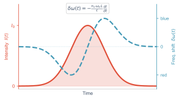
SPM is the engine: the Kerr effect is instantaneous, so the phase shift follows the intensity envelope exactly. The leading edge of the pulse sees a rising intensity → phase increases → instantaneous frequency decreases (red shift). Trailing edge: falling intensity → blue shift.
The slider shows normalised peak intensity 0→1, corresponding to a B-integral of 0→5π rad. At high intensity the spectrum develops characteristic SPM side-lobes from constructive/destructive interference of the phase-shifted field.
SPM alone does not compress the pulse — it broadens the spectrum but adds a positive chirp (red in front, blue behind). Anomalous dispersion then acts to compress this chirped pulse, or soliton dynamics balance the two effects dynamically.
HCF advantage: gas pressure sets both n₂ (nonlinearity) and β₂ (dispersion) independently, giving full control over the soliton number N and the compression dynamics.
Fiber Types
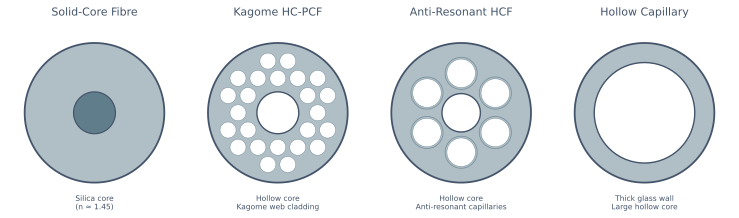
Solid Core Fiber
Core: solid silica (n ≈ 1.45); Cladding: slightly lower-n doped silica
Guidance via Total Internal Reflection — requires n core > n cladding
Light in glass — high material dispersion and Kerr nonlinearity
Hollow Core Fiber
Core: gas or vacuum; Cladding: microstructured silica — TIR impossible
Light through gas — ~1000× lower dispersion and nonlinearity than solid core
Photonic Bandgap (PBG): periodic cladding creates a reflective bandgap — low loss, but narrow bandwidth and fragileAnti-Resonant (AR): tube diameter tuned for destructive interference in the walls — low loss, broad bandwidth, but fragileHollow Capillary: guidance via grazing-angle reflectivity — lower transmission, but tolerates high-intensity pulses
Power Loss Length of a Hollow Capillary Fibre
$$L_\text{loss} \approx \frac{4\pi^2 \overbrace{a^3}^{\text{large core}} }{3\, \underbrace{u_{nm}^2}_{\text{mode}} \, \underbrace{\lambda^2}_{\text{wavelength}}}$$
Core Radius Scaling ($a^3$)
Loss falls cubically with core radius
Doubling $a$ → 8× longer $L_\text{loss}$
15 µm core: $L_\text{loss} \approx$ 1 cm — unusable
125 µm core: $L_\text{loss} \approx$ metres — practical
Wavelength Scaling ($\lambda^2$)
$L_\text{loss} \propto 1/\lambda^2$ — longer wavelengths suffer more loss
Moving 800 nm → 1030 nm (Yb): $L_\text{loss}$ drops by 40%
Moving to mid-IR (2 µm): $L_\text{loss}$ drops by 6×
Working in the IR forces larger core diameters to compensate
The Trade-off
Large core → low loss, high damage threshold ✓
Large core → weak waveguide dispersion and effective nonlinearity ✗
Solution: choose a heavier fill gas or increase pressure to restore nonlinearity
This is equation 2 from Travers et al., Nature Photonics 2019. $u_{nm}$ is the mth zero of Bessel function $J_{n-1}$; for HE₁₁, $u_{11} = 2.405$.
The $a^3$ scaling is what makes large-core HCF unique — it's a leaky waveguide (EH₁₁ mode), not truly guided, so loss is intrinsically high at small core sizes.
The key engineering insight from the paper: $L_\text{fiss} \propto a^2$ but $L_\text{loss} \propto a^3$, so the ratio $L_\text{fiss}/L_\text{loss} \propto 1/a$ always improves with larger core. There is no fundamental barrier to soliton dynamics in HCF — it just requires a large enough core.
Improving Capillary Transmission by Stretching
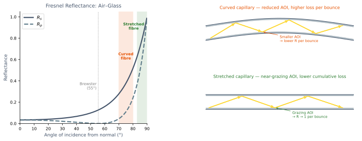
Physically stretching the fibre keeps it straight, maintaining near-grazing angles of incidence at the glass wall where Fresnel reflectance approaches unity — reducing cumulative bounce losses along the fibre length.
A hollow capillary is an inherently leaky waveguide: light is guided by near-total reflection at the inner glass surface at very shallow (grazing) angles.
The Marcatili–Schmeltzer loss formula (L_loss ∝ a³/λ²) assumes a perfectly straight fibre. In practice, bending increases loss by reducing the angle of incidence at each wall bounce — moving away from the grazing regime where reflectance is highest.
Physically stretching the fibre removes the sag introduced by gravity and clamping, restoring the straight geometry and the associated high-AOI reflectance.
Each bounce: R slightly less than 1. After N bounces, transmitted power ∝ R^N. Keeping R close to 1 (grazing) dramatically reduces the accumulated loss over a metre-scale fibre.
This is a practical technique used in high-energy pulse delivery setups — stretching over a rigid mount or tensioning the capillary between two translation stages.
Nonlinearity of Rare Fill Gases
Gas
Relative $n_2$
Ionisation potential (3-photon λ)
Typical use
He
1
24.6 eV (151.2 nm)
High-energy, high-intensity
Ne
3
21.6 eV (172.2 nm)
Deep-UV / VUV generation
Ar
290
15.8 eV (235.4 nm)
SPM post-compression
Kr
790
14.0 eV (265.7 nm)
Low-pressure broadening
Xe
2380
12.1 eV (307.4 nm)
Low-energy, long-wavelength
Choosing a Fill Gas
Heavier gas or higher pressure compensates for weaker nonlinearity in large-core fibres
$n_2$ scales linearly with pressure — Xe gives same nonlinearity as Ar at ~8× lower pressure
IP sets two limits: maximum intensity before plasma formation, and minimum drive wavelength — catastrophic ionisation if $\lambda_\text{drive}$ is blue of the 3-photon equivalent
At LCLS
He: highest IP — handles mJ intensities and deep-UV drive wavelengths; requires high pressure to compensate low $n_2$
Ne: deep-UV / VUV generation at moderate pressures
Ar / Kr: workhorse gases for SPM post-compression at visible / near-IR wavelengths
Pressure tuning is the primary control — same gas, variable dynamics
n₂ values from Lehmeier et al., Opt. Commun. 56, 67 (1985) — ref. 76 in Travers 2019. These are at 800 nm, 1 atm.
The ~2400× range from He to Xe is enormous. This is why helium experiments require bars of pressure while xenon experiments work at millibar levels.
The ionisation potential sets the maximum usable intensity via tunnel ionisation (PPT rate). Helium's 24.6 eV allows intensities up to ~10¹⁵ W/cm² before significant ionisation, where xenon is already heavily ionised at ~10¹³ W/cm².
Molecular gases (N₂, H₂) are occasionally used but add Raman contributions to the nonlinearity, which complicates the soliton dynamics.
Spectral Broadening of OPA in S-HCF
Pressure tuning at 401 nm (Kr, 1 m × 150 µm S-HCF).
Shaded = experiment ; black = simulation .
FTL: 70.6 fs → 9.8 fs at 2.5 bar — 7× bandwidth increase .
Wavelength tunability at 1 bar Kr.
~17 nm FWHM and FTL 18–25 fs across the full OPA range (370–450 nm).
No optic changes — only OPA wavelength and pressure.
Source: Carbide 2 mJ, 330 fs, 33 kHz → Orpheus OPA (SHS, 350–520 nm)
Fiber: 1 m, 150 µm core, Kr, stretched S-HCF
Post-compression: prism pair or chirped mirrors → 15–30 fs
Kaufman, Larsen, … Bain, Forbes et al. , Opt. Lett. 2025
This is our own work — demonstrating SPM broadening of the OPA second harmonic in a stretched hollow capillary fiber filled with krypton.
The key result from Fig 2: single fiber, single gas, just turn the pressure knob — bandwidth increases 7× and FTL drops from 70 fs to sub-10 fs. Simulation (Luna.jl) matches the experiment remarkably well.
Fig 3 shows the other tuning axis: fix pressure, scan OPA wavelength across the full mirror bandwidth (370–450 nm). The broadened spectrum stays consistent across the whole range. No realignment needed.
Together these two figures show simultaneous tunability in wavelength AND pulse duration — which is exactly what's needed for pump–probe experiments targeting different chromophores.
Pressure Tuning in a Compact TILE System
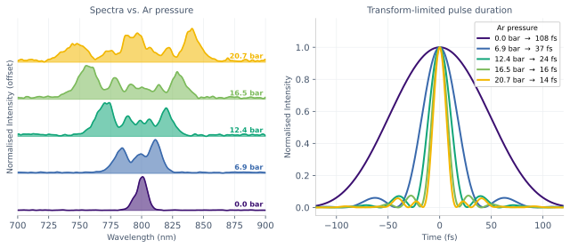
30 cm S-HCF · 150 µm core · Argon — fits inside a TILEFTL tunable from ~100 fs → ~13 fs by pressure alone
This is our own pressure-scan data using a 30 cm stretched HCF — short enough to fit inside a TILE enclosure, making it viable for deployment at an LCLS hutch without a dedicated laser room.
The key result: single knob (Ar pressure) tunes the transform-limited duration from ~100 fs (unbroadened) down to ~13 fs. No optic changes, no realignment.
Compare to the OPA paper: 1 m fiber, Kr, 350–500 nm. Here: 30 cm, Ar, 800 nm Ti:S — same principle, different wavelength and a much more compact format.
SPM Creates a Chirped Pulse
The instantaneous frequency shift $\delta\omega(t)=-\frac{n_2\omega_0 L}{c}\frac{dI}{dt}$
is negative (red-shifted) on the rising edge and positive (blue-shifted) on the falling edge.
The pulse exits the fibre with positive chirp — reds at the front, blues at the back —
and is therefore stretched in time relative to its transform limit.
A compressor applying equal and opposite (negative) GDD realigns all components, recovering the short pulse.
This is the key link between SPM and post-compression. SPM does two things simultaneously: it broadens the spectrum (good — more bandwidth means shorter transform-limited duration) and it imposes a positive chirp (bad — the new frequency components are temporally sorted, stretching the pulse).
Left panel: the instantaneous frequency δω follows −dI/dt. On the leading edge (rising intensity) dI/dt > 0 so δω < 0 → red-shift. On the trailing edge dI/dt < 0 so δω > 0 → blue-shift. New red frequencies sit at the front of the pulse; new blue frequencies at the back.
Right panels: the transform-limited pulse is short because all frequency components arrive in phase. After SPM the same bandwidth is present but the components are time-ordered (chirped), stretching the pulse by the factor √(1+(φ₂/τ₀²)²). The compressor undoes this by adding negative GDD.
Intuition: SPM is like applying a positive GDD to the pulse in the time domain. Prism compressors and chirped mirrors apply the conjugate negative GDD to cancel it.
Spectral Phase — Taylor Expansion
$$\varphi(\omega) = \varphi_0
+ \underbrace{\left.\frac{d\varphi}{d\omega}\right|_{\omega_0}}_{\mathrm{GD}} \!(\omega - \omega_0)
+ \frac{1}{2}\underbrace{\left.\frac{d^2\varphi}{d\omega^2}\right|_{\omega_0}}_{\mathrm{GDD}} \!(\omega - \omega_0)^2
+ \frac{1}{6}\underbrace{\left.\frac{d^3\varphi}{d\omega^3}\right|_{\omega_0}}_{\mathrm{TOD}} \!(\omega - \omega_0)^3
+ \cdots$$
$\varphi_0$ — Carrier-Envelope Phase
Constant phase offset; shifts all frequencies equally
No effect on pulse shape or duration
Only relevant for few-cycle pulses
GD — Group Delay
Linear phase: shifts the envelope in time without distortion
Sets pulse arrival time; no effect on duration
GDD — Group Delay Dispersion
Quadratic phase: different frequencies arrive at different times
Units: fs² — positive GDD stretches the pulse
Dominant term in most optical systems
TOD — Third-Order Dispersion
Cubic phase: creates asymmetric satellite pulses
Units: fs³ — significant for broadband (<30 fs) pulses
Often the limit on compressed pulse quality
Spectral Phase & Dispersion
Post-Compression
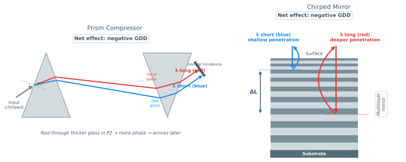
The Concept
SPM adds positive chirp — apply negative GDD to recompress
Quality limited by residual higher-order dispersion
Prism Compressor
Tunable negative GDD via prism separation
Low loss, broadband — preferred for visible/UV
TOD not compensated — limits achievable pulse duration
Chirped Mirror Compressor
Fixed GDD per bounce from multilayer coating
Compact, negligible TOD — preferred for NIR
TOD compensation can be engineered in
Post-compression is the second stage of Route 1. The SPM-broadened pulse exiting the HCF is chirped — it has the bandwidth for a short pulse but the frequencies are temporally spread out.
Prism compressors are the natural choice for visible/UV (350–700 nm) where chirped mirror coatings are harder to manufacture. They're used in our OPA broadening setup.
Chirped mirrors dominate in the NIR (700–1100 nm) where high-quality designs are commercially available. They're compact and introduce negligible TOD.
Post-Compression Results
Prism compressor — compression to 30 fs
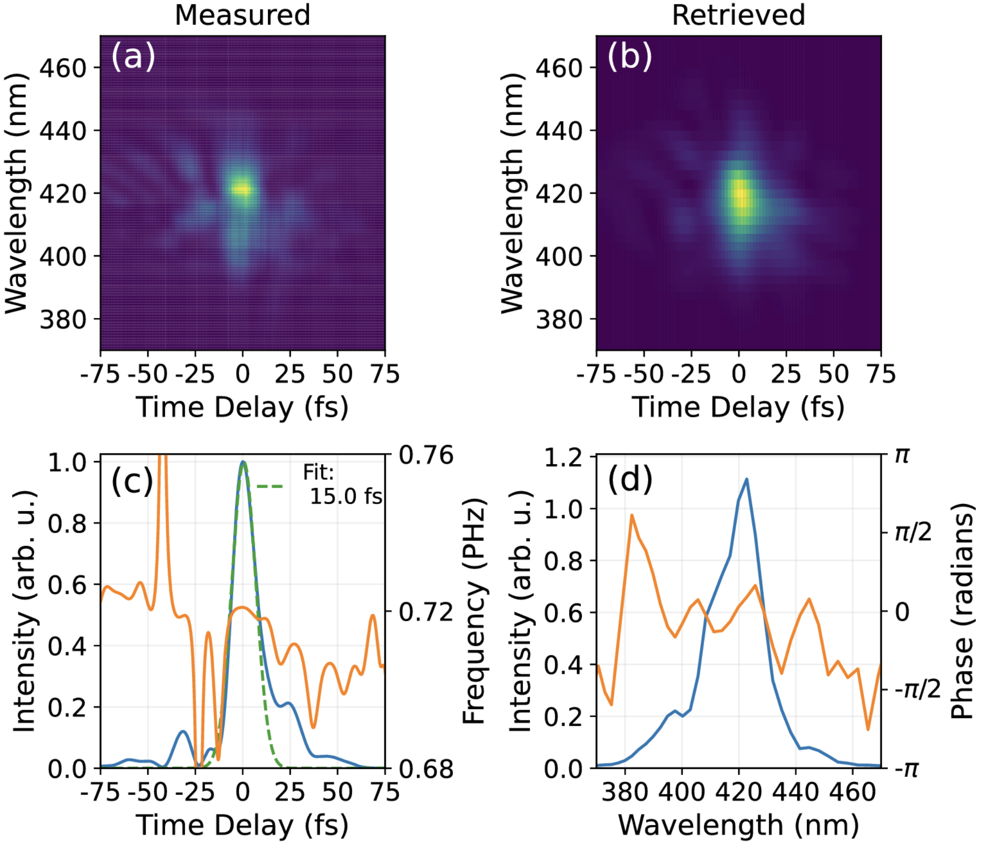
Chirped mirror compressor — increased bandwidth compressed to 15 fs
HCF Compression at CXI — Instrument Response Function
Key Results
HCF broadening of 800 nm Ti:S fundamental compressed to <40 fs
Combined with LCLS Low Charge mode (<10 fs X-ray pulses)
Overall instrument response function: 7.6 fs
Deployed in three experiments so far, with one more upcoming April '26
The Soliton — A Wave of Translation
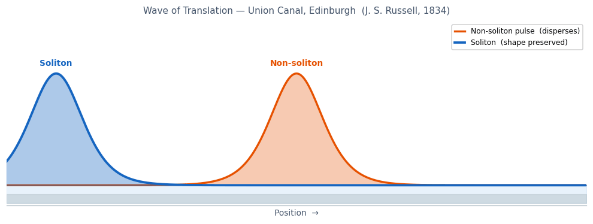
Blue: soliton — sech² shape preserved indefinitely. Orange: non-soliton pulse — same initial shape, disperses at the same group velocity.
"I was observing the motion of a boat which was rapidly drawn along a narrow
channel by a pair of horses, when the boat suddenly stopped — not so the mass
of water in the channel which it had put in motion; it accumulated round the
prow of the vessel in a state of violent agitation, then suddenly leaving it
behind, rolled forward with great velocity… I followed it on horseback, and
overtook it still rolling on at a rate of some eight or nine miles an hour,
preserving its original figure some thirty feet long and a foot to a foot
and a half in height."
— John Scott Russell, Union Canal, Edinburgh, August 1834
Historical milestones
Russell's report to the British Association (1844) was initially rejected by theorists — a wave cannot travel without changing shape
Boussinesq (1871) and Korteweg & de Vries (1895) provided the first theoretical descriptions
Zabusky & Kruskal (1965) re-discovered them numerically and coined the term soliton — a particle-like wave that passes through others intact
Russell's original observation: August 1834, Union Canal, near Hermiston, Edinburgh. A barge stopped suddenly, the bow wave detached and rolled forward as a solitary hump. Russell followed it on horseback for 1–2 miles.
The wave Russell saw was a KdV soliton — it persists because the nonlinear steepening (shallower water under the crest gives it a higher phase velocity) exactly compensates the dispersive spreading of longer wavelengths outrunning shorter ones.
The optical analogue is governed by the nonlinear Schrödinger equation (NLS). The balancing acts differ: GVD separates frequencies in time while SPM creates new frequencies — but at the right power (N=1), they cancel perfectly.
Mollenauer, Stolen & Gordon (Bell Labs, 1980) demonstrated the first optical soliton in a single-mode fibre. This launched a huge field in fibre-optic communications.
Group Velocity Dispersion of a Gas-Filled HCF
$$\beta_2(\lambda) \approx \frac{\lambda^3}{4\pi c^2}
\left[
\underbrace{\rho_r \frac{\partial^2 \chi_e}{\partial \lambda^2}}_{\text{material dispersion}}
-
\underbrace{\frac{u_{nm}^2}{2\pi^2 a^2}}_{\text{waveguide dispersion}}
\right]$$
Material Dispersion
$\rho_r$ — gas density, set by fill pressure
$\chi_e(\lambda)$ — susceptibility of the fill gas
Always positive at optical wavelengths → normal
Increases linearly with pressure
Waveguide Dispersion
$u_{nm}$ — Bessel zero, fixed by mode (HE$_{11}$: $u_{11} = 2.405$)
$a$ — core radius; dispersion scales as $1/a^2$
Always negative → anomalous
Weakens for larger cores
Engineering the Dispersion
$\beta_2$ is the balance between the two terms
$\lambda_\text{zd}$ tunable via gas pressure
Pump red of $\lambda_\text{zd}$ → anomalous GVD → solitons
Higher pressure shifts $\lambda_\text{zd}$ to shorter $\lambda$, tuning RDW
This is equation 1 from Travers et al., Nature Photonics 2019. It is the GVD of the HEnm guided modes of a gas-filled hollow capillary fibre.
The HE₁₁ mode (n=1, m=1) is the fundamental mode — u₁₁ = 2.405 (first zero of J₀).
The key insight: in glass fibre you cannot tune the dispersion. In a gas-filled HCF you can continuously adjust β₂ by changing the fill pressure, giving full control over the soliton dynamics and RDW emission wavelength.
Large core radius is essential for high pulse energy (damage threshold scales with area) but reduces waveguide dispersion — this is why the paper's achievement of soliton dynamics in large-core HCF is significant.
Generating a Soliton
Soliton Formation
SPM broadens the spectrum; anomalous GVD ($\beta_2 < 0$) balances the induced chirp
When SPM and GVD balance, the pulse neither stretches nor compresses — it propagates as a soliton
Extreme Broadening
The combination of SPM-driven broadening and dispersion-balanced compression produces a UV–NIR supercontinuum in a single fibre pass
Noble gas fill gives tuneable nonlinearity via pressure; large core supports high pulse energies
The key message: it is the combination of SPM spectral broadening and dispersion-balanced compression that produces this extreme broadening. Neither effect alone is sufficient.
The RDW simulation shows the spectral (left) and temporal (right) evolution along the fibre. The dashed line marks 75 cm — the approximate fission point where the soliton breaks up and the dispersive wave is emitted into the UV.
Large core HCF is essential: it keeps L_fiss well within L_loss while allowing the high pulse energies needed to reach the required soliton number.
Soliton Fission Length
$$L_\text{fiss} \approx \frac{a^2 \tau_{fw}}{3N\,|\delta(\lambda_0, \lambda_{zd})|}
\propto \frac{\overbrace{a^2}^{\text{core}} \; \overbrace{\tau_{fw}}^{\text{pulse duration}}}{\underbrace{I_0}_{\text{peak intensity}}}$$
What is $L_\text{fiss}$?
Length at which a higher-order soliton ($N > 1$) breaks up into $N$ fundamental solitons
The point of maximum compression — shortest pulse duration is reached here
Requires $L_\text{fiss} < L_\text{loss}$ for compression to occur
Design Levers
$L_\text{fiss} \propto a^2$ — larger core increases fission length
$L_\text{loss} \propto a^3$ — larger core reduces loss faster
Ratio $L_\text{fiss}/L_\text{loss} \propto 1/a$ → always improves with larger core
Shorter pulses or higher intensity reduce $L_\text{fiss}$
Operating Regime
Coherent compression requires $N < 15$ (above: modulational instability)
Upper limit on $I_0$: ionisation threshold of the fill gas
This work: $N = 6.8$, $a = 125$ µm, $\tau_{fw} = 26$ fs, 1 bar He
$L_\text{fiss} \approx 1.5$ m — comfortably within 3 m fibre
Equation 3 from Travers et al., Nature Photonics 2019. The δ(λ₀, λ_zd) function encodes the dispersion landscape — specifically the integrated anomalous GVD between the pump and zero-dispersion wavelength.
The key scaling argument: L_fiss ∝ a² and L_loss ∝ a³, so L_fiss/L_loss ∝ 1/a. This means there is no fundamental barrier to soliton dynamics in HCF — you just need a large enough core. Previous HCF post-compression experiments used ~1 m fibres with 30 fs pulses, giving L_fiss >> L_fibre, which is why soliton effects were never seen.
The ionisation limit on intensity is important — noble gases (He, Ar, Ne) are preferred because they have high ionisation thresholds and well-characterised nonlinearity.
Soliton Self-Compression in a Hollow Core Fiber
Resonant Dispersive Wave Emission
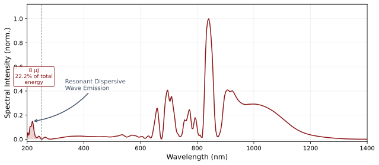
Spectral energy density integrated below 250 nm: 8 µJ (22.1% of total output energy) .
RDW Tunability
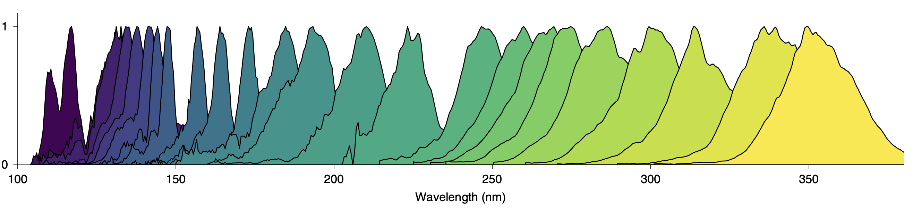
Broad tunability from the VUV to the near-IR in a single fibre, with microjoule pulse energies maintained across the full tuning range
RDW wavelength is set by gas pressure , gas identity , and fibre radius — each shifts the zero-dispersion wavelength and hence the phase-matching condition
Generation efficiency is optimised by tuning the input pulse energy and pulse duration to reach the target soliton number
Upcoming — Investigating Deep UV Driven Photochemistry in Alkenes with Sub-10 fs Time Resolution
Science Motivation
<7 fs at 210 nm (RDW) + <10 fs X-rays → sub-10 fs IRF to directly clock excited-state molecular motion
Target: cis/trans isomerisation of 1,3-butadiene — predicted to complete in tens of fs, never time-resolved
Heavier substituents in 2,5-dimethyl-2,4-hexadiene predicted to slow isomerisation — tests steric control of reaction pathway
2,5-dimethyl-2,4-hexadiene
Acknowledgements
LCLS Laser Sciences
Joe Robinson
Kirk Larsen
Brian Kaufman
Mat Britton
LCLS Laser Optical Engineering
LCLS Laser Systems
LCLS Laser Mechanical Engineering
Anthony Fong
Brett Chmiel
UC Davis
Heriot-Watt University (UK)
John Travers
Chris Brahms
Nikoleta Kotsina
Michael Heynck
STFC (UK)
Soliton Self-Compression
What is a Soliton?
A soliton is a pulse that propagates without changing shape — dispersion and nonlinearity exactly balance
In anomalous dispersion (β₂ < 0), negative GDD competes with SPM-induced positive chirp
A higher-order soliton (soliton number N > 1) undergoes periodic compression and splitting — it first compresses dramatically before dispersing
Soliton number: N² = L_D / L_NL = γ P₀ τ² / |β₂| — set by pulse energy and fiber parameters
HCF Advantage
Anti-resonant HCF can be designed with anomalous dispersion at 800 nm by controlling core size and gas pressure
Low nonlinearity (air vs glass) allows high pulse energies while maintaining the correct N for soliton compression
Compression ratio scales as N — typical values N = 5–15 give 5–15× temporal compression in a single pass
Unlike chirped-mirror compression, soliton compression requires no additional optics after the fibre
The key insight is that in anomalous dispersion, GDD and SPM have opposite signs of chirp — GDD stretches the pulse in time (red before blue for anomalous) while SPM creates new blue frequencies at the leading edge and red at the trailing edge. At the right power level (N=1), these exactly cancel. For N>1, the nonlinearity dominates early and the pulse compresses first.
In hollow core fibre, you get anomalous dispersion "for free" at the right core size — unlike solid silica which has normal dispersion below 1.3 µm. This is why HCF enables soliton compression at 800 nm.
The dispersive wave emission on the next slide is a direct consequence of higher-order soliton dynamics — energy shed by the soliton into a phase-matched resonance.